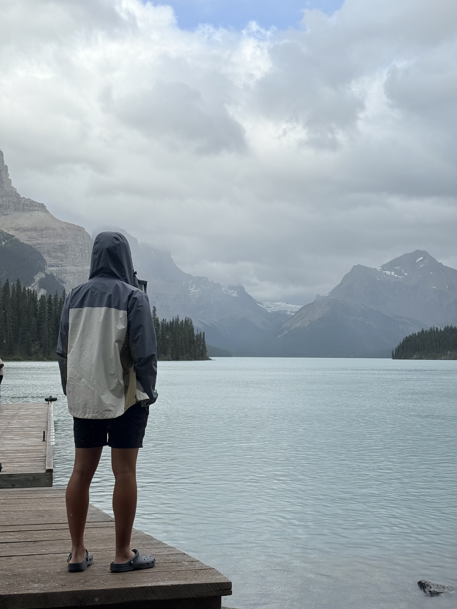
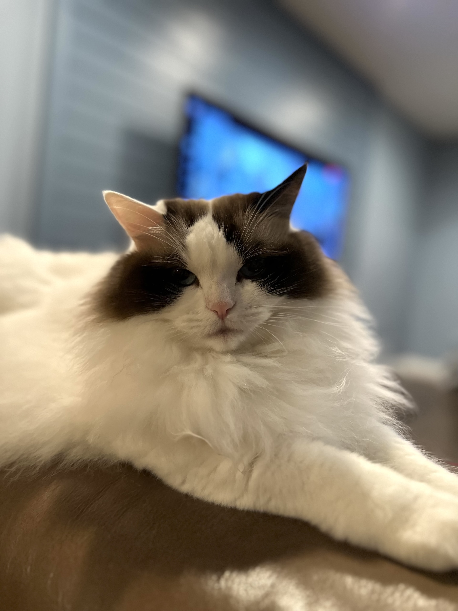
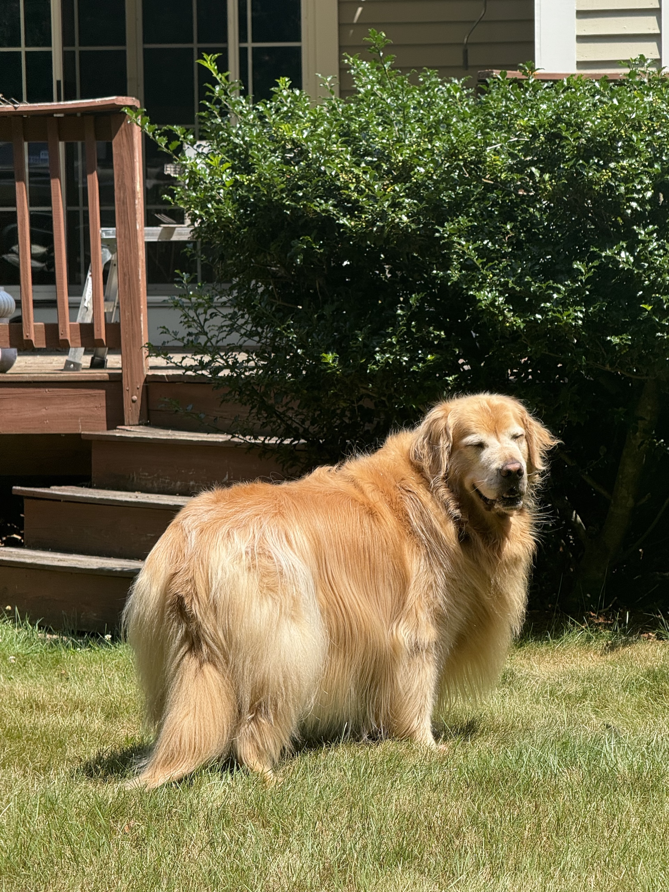
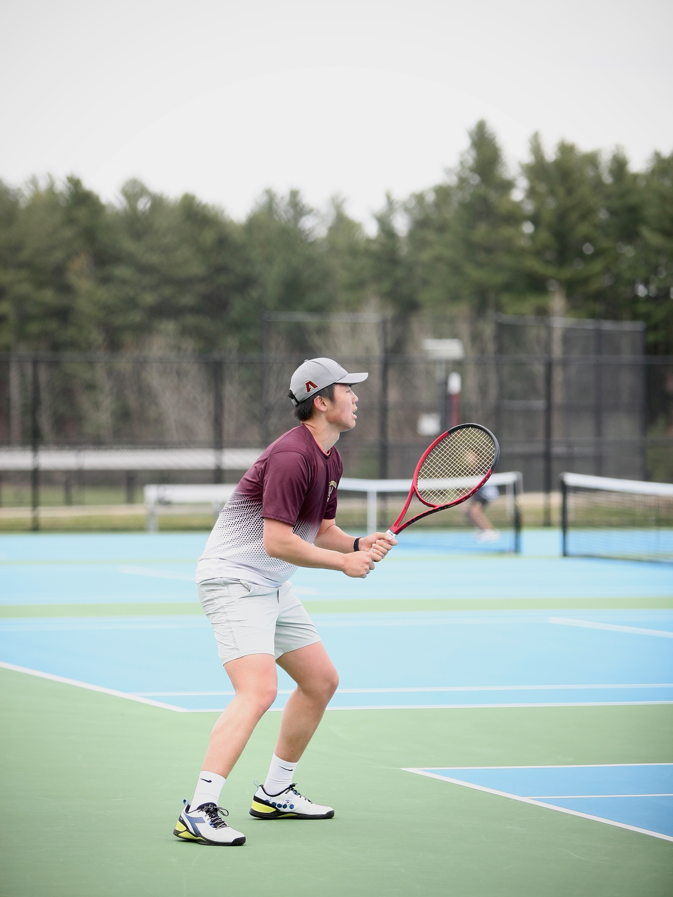

Hello, my name is Corey Lu. I am a current junior at Mass Academy, and my sending school is Algonquin Regional High School.
I have always loved to travel and experience new places. One of my favorite trips was to Banff and Jasper in Canada, where I had the chance to explore the breathtaking Canadian Rockies. I especially enjoyed hiking along the trails, biking through the mountain scenery, and spotting wildlife in their natural habitat. Being outdoors has always been something I value, whether it’s through travel or in my everyday life.
Outside of school, I stay active in a variety of ways. I am a member of Troop 1 Southborough, where scouting has given me the chance to build leadership skills, spend time outdoors, and challenge myself in different ways. I also enjoy activities like programming and CAD design, which let me combine problem-solving with creativity. I am also a member of the robotics team. For sports, I play both tennis and golf, and I make time for hiking, biking, and camping whenever I can. In general, I love finding ways to stay active and connected with nature. I am also a member of the robotics team. I am also a member of the robotics team.
In my free time, I like to relax by watching movies and listening to music. Both give me a chance to explore new ideas and unwind after a busy day.
At home, I live with my mom, dad, and sister, who are all very supportive. We also share our home with two pets: a golden retriever named Bogey, who is full of energy, and a ragdoll cat named Rella.
   This is me on a glacier tour in the Canadian Rockies. The Athabasca Glacier, located in Jasper National Park in Alberta, Canada, is the most visited glacier of the Columbia Icefield in the Canadian Rockies. Stretching about 6 kilometers long and up to 300 meters thick, it once covered a much larger area but has been retreating rapidly due to climate change—losing more than 1.5 kilometers of length and over half its volume in the past 125 years. Its accessibility along the Icefields Parkway makes it a popular destination, where visitors can view the glacier up close or join guided tours onto its icy surface, though warning signs mark the dangers of hidden crevasses.